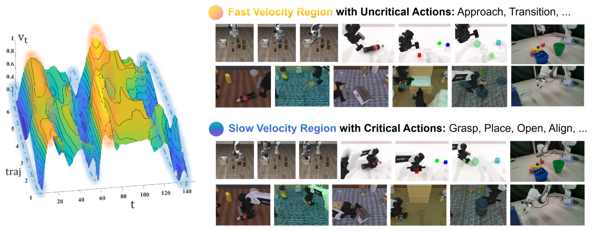
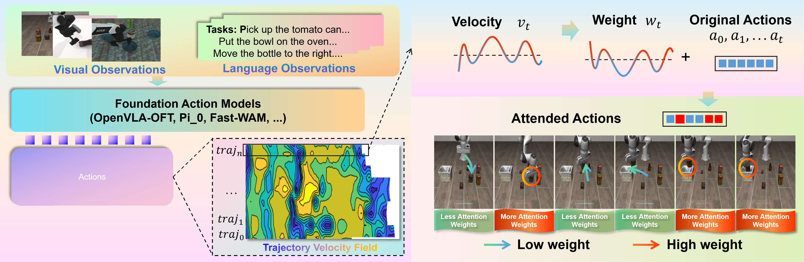
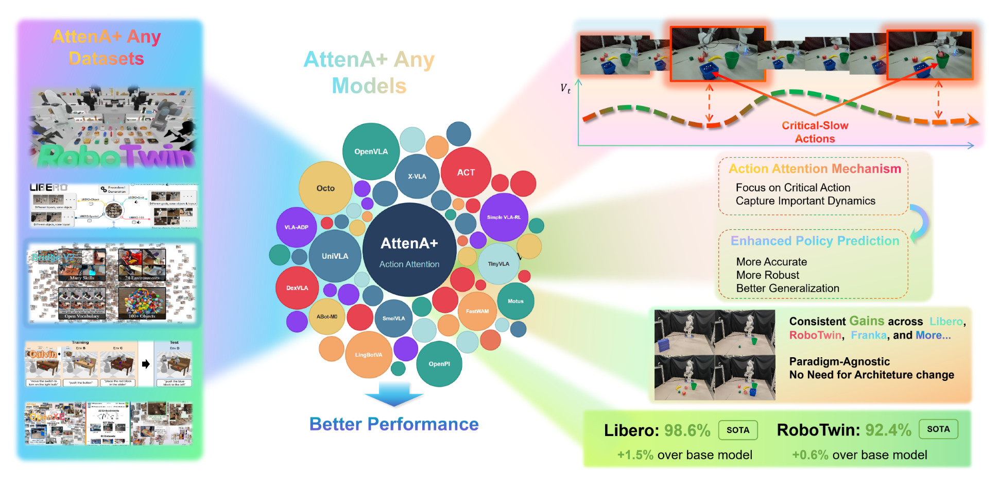
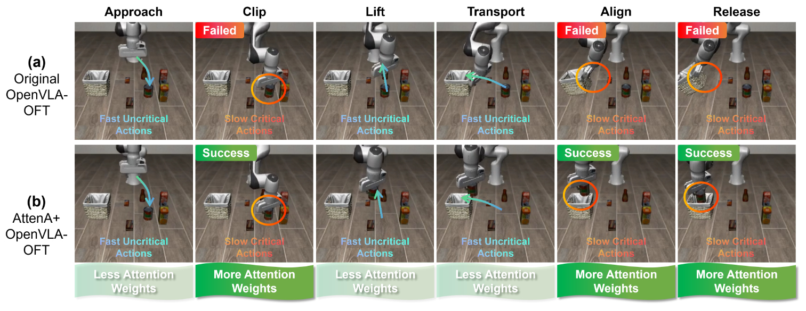
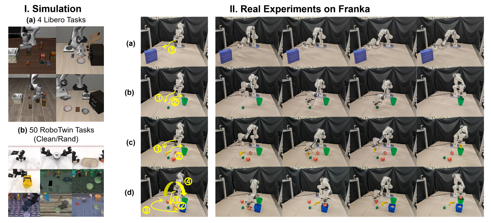

Existing robotic foundation models, while powerful, are predicated on an implicit assumption of temporal homogeneity: treating all actions as equally informative during optimization. This "flat" training paradigm remains indifferent to the underlying physical hierarchy of manipulation. In reality, robot trajectories are fundamentally heterogeneous — low-velocity segments often dictate task success through precision-demanding interactions, while high-velocity motions serve as error-tolerant transitions. To rectify this misalignment, we introduce AttenA+, an architecture-agnostic framework that prioritizes kinematically critical segments via velocity-driven action attention. By reweighting the training objective based on the inverse velocity field, AttenA+ naturally aligns the model's learning capacity with the physical demands of manipulation. As a plug-and-play enhancement, it integrates into existing backbones without structural modifications or additional parameters. Extensive experiments demonstrate significant improvements across state-of-the-art models, with real-world validation on a Franka manipulator further showcasing its robustness and cross-task generalization.


Compute the L2 norm of the velocity components (joint velocities) for each action step in the chunk.
Map velocity to a monotonically decreasing weight function, clipped to a configurable range for stability.
Multiply per-step loss by attention weight. Works for both discriminative (L1) and generative (MSE / flow-matching) objectives.
Integrates into OpenVLA-OFT, π₀, π₀.₅, FastWAM and more — just add the velocity attention wrapper to your training loop.

| Method | Spatial | Object | Goal | Long | SR (%) | ER (%) |
|---|---|---|---|---|---|---|
| OpenVLA-OFT | 97.6 | 98.4 | 97.9 | 94.5 | 97.1 | 2.9 |
| π₀ | 96.8 | 98.8 | 95.8 | 85.2 | 94.15 | 5.85 |
| UniVLA | 96.5 | 96.8 | 95.6 | 92.0 | 95.23 | 4.78 |
| VLA-ADP | 99.0 | 98.2 | 96.8 | 91.2 | 96.3 | 3.7 |
| AttenA+OFT (Ours) | 99.0 | 100.0 | 98.8 | 96.6 | 98.6 | 1.4 |
| AttenA+π₀.₅ (Ours) | 99.2 | 99.6 | 98.8 | 94.2 | 97.95 | 2.05 |
| Method | Embodied PT. | Clean | Random | SR (%) | ER (%) |
|---|---|---|---|---|---|
| π₀ | ✓ | 65.92 | 58.40 | 62.2 | 37.8 |
| π₀.₅ | ✓ | 82.74 | 76.76 | 79.75 | 20.25 |
| Motus | ✓ | 88.66 | 87.02 | 87.8 | 12.2 |
| LingBot-VA | ✓ | 92.90 | 91.50 | 92.2 | 7.8 |
| Fast-WAM | ✗ | 91.88 | 91.78 | 91.8 | 8.2 |
| AttenA+WAM (Ours) | ✗ | 93.06 | 91.86 | 92.46 | 7.54 |

| Model | Close Drawer | Put Cube | Multi-Object | Long-Horizon | SR (%) | ER (%) |
|---|---|---|---|---|---|---|
| OpenVLA-OFT | 100 | 96 | 90 | 84 | 92.5 | 7.5 |
| AttenA+OFT (Ours) | 100 | 100 | 98 | 90 | 97.0 | 3.0 |

Discriminative VLA
World-Action Model
Generative Flow Matching
ACT, Diffusion Policy, ...
@inproceedings{peng2026attenaplus,
title = {AttenA+: Rectifying Action Inequality in Robotic Foundation Models},
author = {Peng, Daojie and Ma, Fulong and Cao, Jiahang and Zhang, Qiang
and Xie, Xupeng and Guo, Jian and Luo, Ping
and Luo, Andrew F. and Zhou, Boyu and Ma, Jun},
booktitle = {Advances in Neural Information Processing Systems (NeurIPS)},
year = {2026},
}